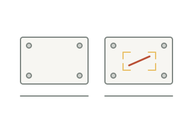
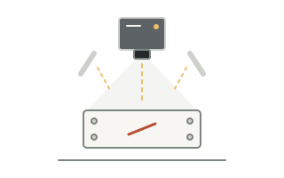
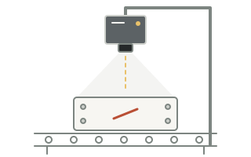

도입 절차
샘플 확인부터 현장 적용까지
제품과 검사 환경을 먼저 살펴보고, 도입에 필요한 조건을 단계별로 정리합니다.
01샘플 확인
검사할 제품과 확인해야 할 불량을 함께 살펴봅니다.

- 준비 자료
- 제품 전체와 검사 부위 사진, 정상·불량 샘플
- 검토 내용
- 크기·재질·표면 상태와 불량이 나타나는 위치를 확인합니다.
- 다음 확인 사항
- 검사할 항목과 구분 기준을 정리하고 촬영 검토로 이어갑니다.
02촬영 검토
카메라에 필요한 특징이 보이는 촬영 조건을 검토합니다.

- 준비 자료
- 샘플과 촬영 가능 위치, 주변 조명 정보
- 검토 내용
- 카메라·렌즈·조명 배치에 따라 검사 부위가 어떻게 보이는지 살펴봅니다.
- 다음 확인 사항
- 확인할 영역과 촬영 조건을 정리하고 설치 환경을 검토합니다.
03현장 적용
검토한 조건을 실제 공정에 맞게 적용할 방법을 확인합니다.

- 준비 자료
- 설비와 설치 공간 사진, 제품 이동 방식
- 검토 내용
- 설치 위치·작업 동선·주변 환경과 결과 확인 방식을 살펴봅니다.
- 다음 확인 사항
- 현장 조건과 필요한 조정 사항을 정리한 뒤 적용 범위를 결정합니다.
단계별 확인 내용은 제품과 현장 환경에 따라 달라질 수 있습니다.
상담 전, 이 세 가지를 준비해 주세요.
- 01
제품 사진
제품 전체와 검사 부위를 볼 수 있는 사진
- 02
검사할 항목
흠집·누락·인쇄 중 확인하려는 항목
- 03
설치 환경
촬영 위치와 주변 설비를 볼 수 있는 사진
준비한 자료로 도입 가능성을 살펴보세요.
검사할 제품과 현장 환경을 알려주세요.